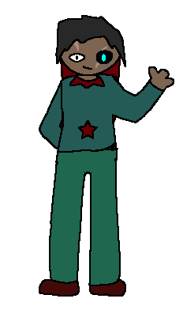

From: Parasites | Age: 19 | Height: 6'2" (188 cm) | she/they

Xitra is a nice girl, She's quite shy when around people she doesnt know but can be quite friendly with people she knows
Unlike the little piece of shit that is his brother Atrix, she's very cautious and careful. and has to bring that little motherfucker out of trouble
Xitra's robotic stuff are powered by the BlueSun. The BlueSun is a rare variant of the RedStar that's 15x more powerful. About 50000 Watts in just 500 grams of that thing compared to the RedStar
Her arm has a star-shaped BlueSun so it's really REALLY powerful.